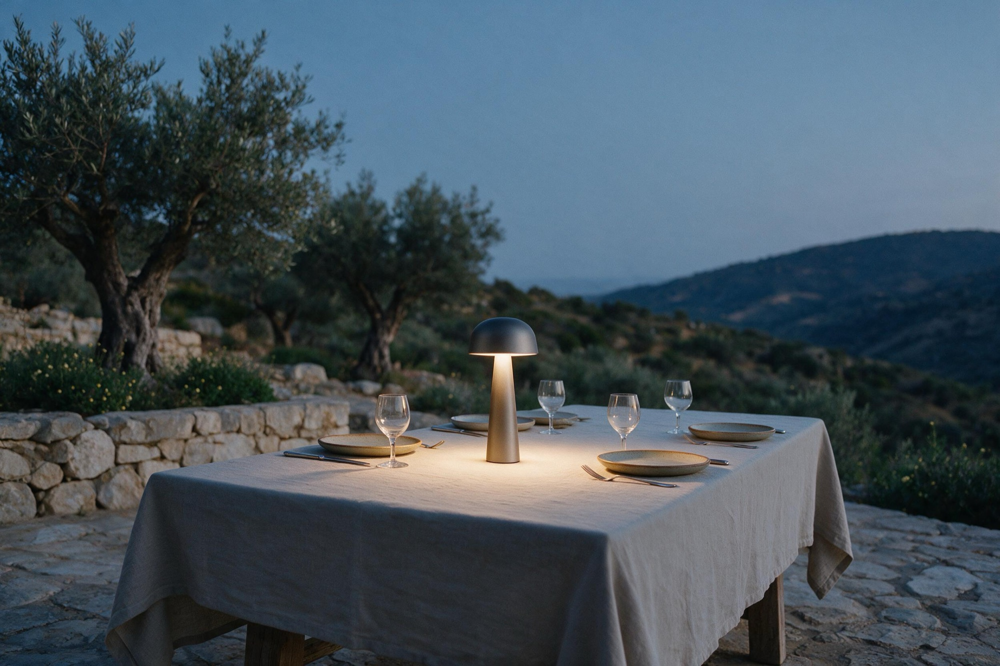
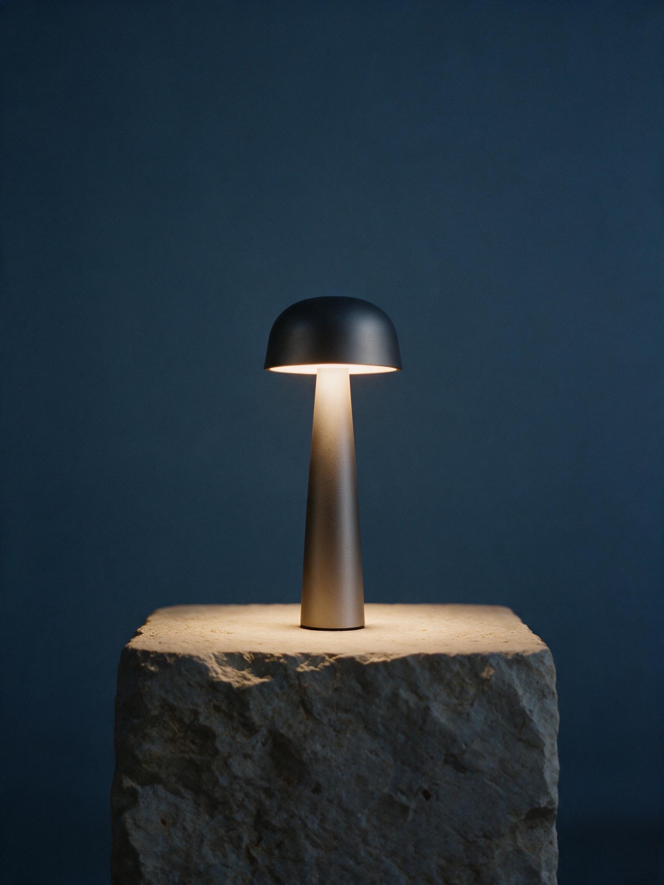
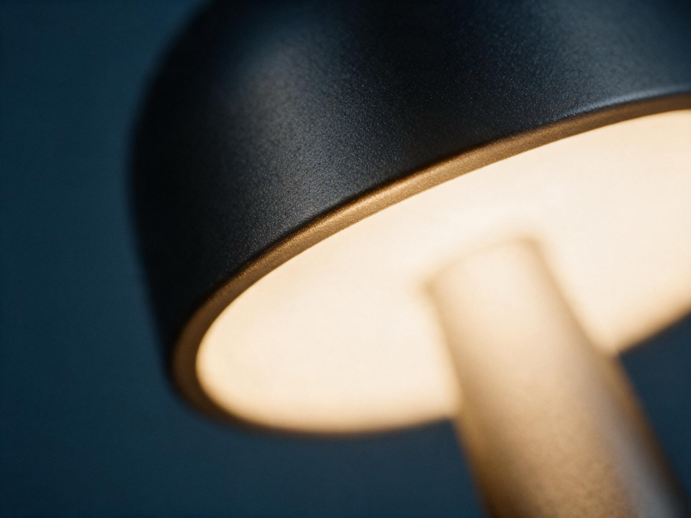
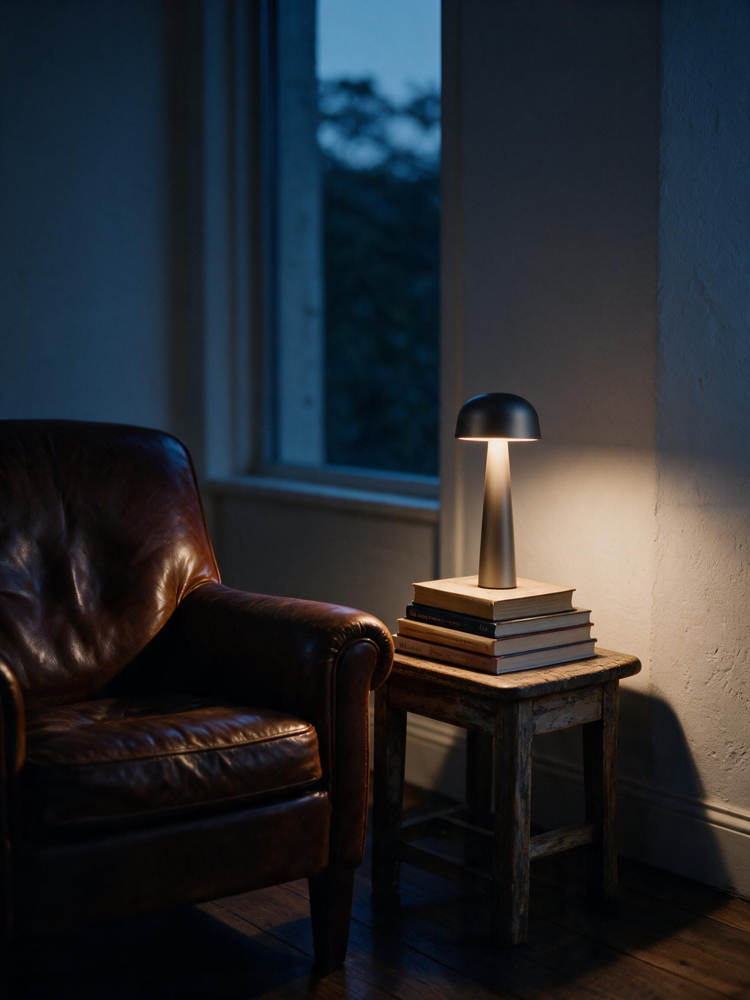
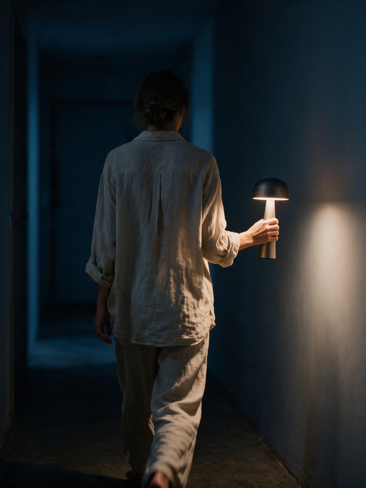
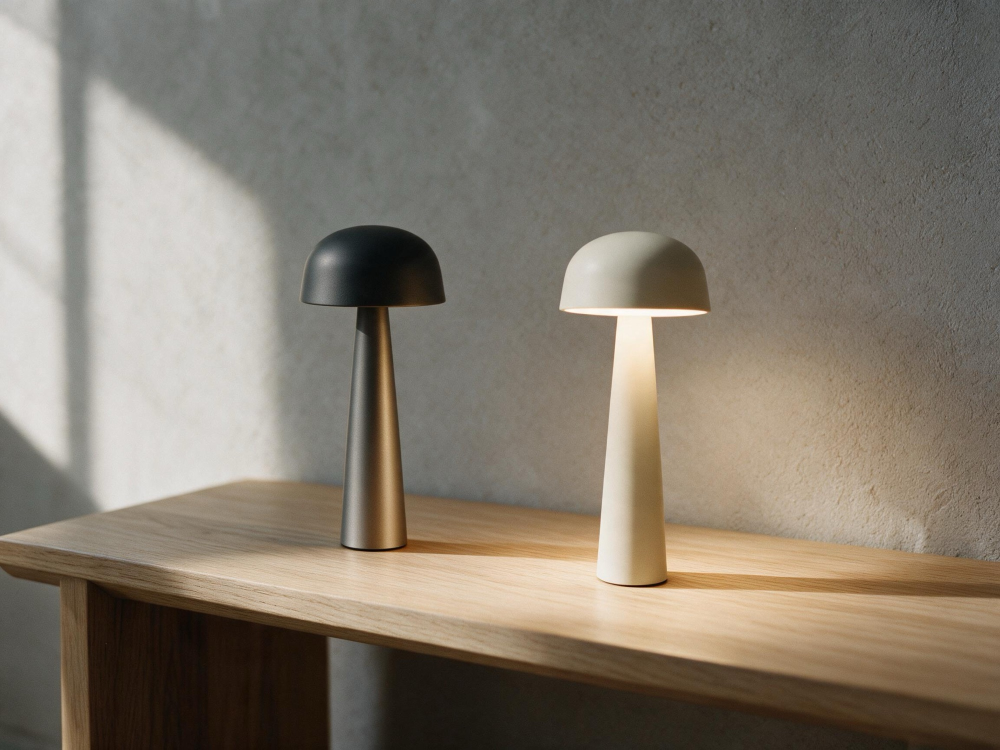

The blue hour,
carried.
Launch campaign for Sera One, a portable lamp for the hours after daylight.
Sera is a lighting brand with a single object to launch: a cordless lamp the size of a wine bottle. This case study covers the campaign idea, the photography direction and the commerce layer.
The idea
Lamps are photographed in daylight. Sera is sold at the only hour that matters.
Every frame in the campaign is set in the blue hour, the cold minutes after sunset when rooms lose their color, and holds exactly one warm source: the product. Cool world, warm object. The contrast is the brand, and it survives any crop.


The campaign
One warm source in a cooling world.



Designed to sell
For the hours
after daylight.
Sera One. Portable, 36-hour runtime, light like a candle that behaves.
Discover · €180DTC hero. The serif speaks, the sans sells; the price sits inside the button so the click already knows what it costs.
In circulation
The same hour, at street scale.
OOH. Six words and a silhouette; posters are read at walking pace, so the image does the arguing.
Story, 9:16. Nothing load-bearing in the bottom third; the tap target clears the reply bar.
Feed, 4:5. The macro carries recognition on texture alone; the wordmark is the only type allowed in.